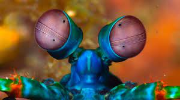
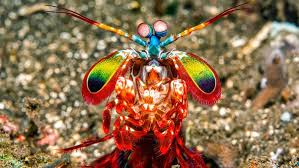
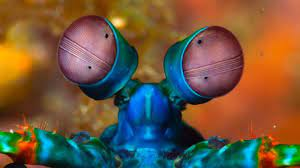
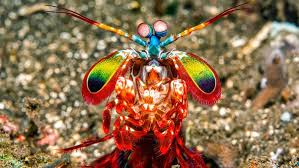

Fatos sobre o Stomatopoda
Informações Gerais

Stomatopoda (ou estomatópode), chamados popularmente de tamarutacas ou de lacraias-do-mar no Brasil, é uma ordem de crustáceos marinhos da subclasse Hoplocarida, que agrupa cerca de 400 espécies, caracterizadas principalmente pela morfologia da segunda pata torácica, que é modificada em apêndice subquelado, lembrando uma pata de louva-a-deus.
- Odontodactylus scyllarus.
- Reino: Animalia
- Filo: Arthropoda
- Subfilo: Crustacea
- Classe: Malacostraca
- Subclasse: Hoplocarida
- Ordem: Stomatopoda
Fatos Interessantes
Cones de cores receptivos
Esses animais conseguem ver um spectro de cores criado por 16 diferentes cores que o cerébro humano não conseguem compreender. Isso é porque seus olhos possuem 16 cones de cores receptivos

Um dos animais mais agressivos do mundo
Tem dois apêndices raptoriais na frente de seu corpo. Estes aceleram com a mesma velocidade de um tiro, e em menos de três milésimos podem atingir a presa com 1500 newtons de força

Informações Gerais
Stomatopoda (ou estomatópode), chamados popularmente de tamarutacas ou de lacraias-do-mar no Brasil, é uma ordem de crustáceos marinhos da subclasse Hoplocarida, que agrupa cerca de 400 espécies, caracterizadas principalmente pela morfologia da segunda pata torácica, que é modificada em apêndice subquelado, lembrando uma pata de louva-a-deus.
Fatos Interessantes
Cones de cores receptivos
Esses animais conseguem ver um spectro de cores criado por 16 diferentes cores que o cerébro humano não conseguem compreender. Isso é porque seus olhos possuem 16 cones de cores receptivos
Um dos animais mais agressivos do mundo
Tem dois apêndices raptoriais na frente de seu corpo. Estes aceleram com a mesma velocidade de um tiro, e em menos de três milésimos podem atingir a presa com 1500 newtons de força
